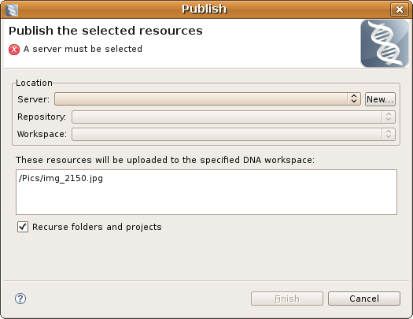

The DNA Publish/Unpublish Dialog is used to publish or unpublish workspace selected files and folders to/from DNA repository workspaces. When publishing, the selected files will be uploaded to the selected DNA repository workspace. When unpublishing, the selected files will be removed from the selected DNA repository workspace (if they exist there). The DNA Preferences Page allows you to filter out files contained within the selection based on their file extensions or by the name of the folder, or ancestor folder, they are contained within.
Here is what the DNA Publish/Unpublish Dialog looks like:
The dialog consists of the following controls:
| Server Combo | allows selection of a registered server |
| New Server Button | use to create and register a new server that is hosting a DNA repository |
| Repository Combo | allows selection of a repository found hosted on the selected server |
| Workspace Combo | allows selection of a workspace of the selected repository |
| Resources List | a list of all the selected files that will be published or unpublished |
| Recurse Checkbox | when checked will recursively select all files within any selected folders |
A server must be selected before a repository can be selected. Likewise, a repository must be selected before a workspace can be selected. The message area at the top of the dialog will indicate the type of operation (publish or unpublish) and if there is any missing information. Once the workspace has been selected the 'Finish' button will be enabled and the operation can be executed. These operations can be run in the background so that multiple operations can be run at the same time. The DNA Message Console displays output from the operations.